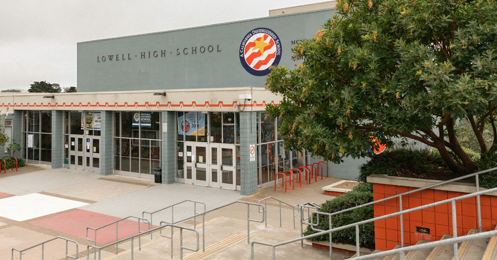
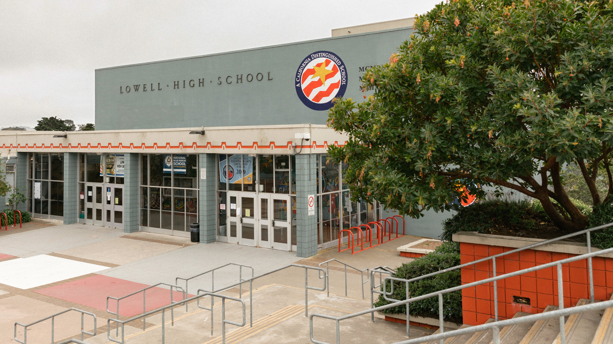
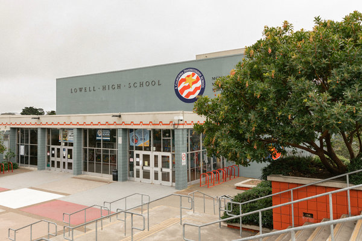

We Don’t Need to Close Schools to Fight the Coronavirus
Facing an accelerating spread of Covid-19, Italy and Japan have closed schools to impede the epidemic.Some communities in the United States have done so too, agreeing to significantly disrupt people’s lives on the theory that it will prevent deaths and serious illness.
But there is no clear evidence that such measures will slow this outbreak.
Most of what we know about the impact of school closings on disease transmission relates to influenza, to which children can be particularly vulnerable, sometimes dying or becoming seriously ill from it.
Children are important drivers of influenza infections because they have more interactions with people than do most adults and also give off more of the virus.Closing schools, it is assumed, reduces the number of contacts and thus the rate of transmission.
During the 2009 H1N1 influenza pandemic, schools across the country were closed.A C.D.C. study showed that parents largely supported these measures, but other studies found that children frequently got together outside the home or visited public sites, despite official recommendations not to do so.Fortunately, schools reopened in less than three days in most cases because data showed the flu strain wasn’t as severe as had been feared.
Still, some evidence suggests that these measures didn’t reduce the number of infections and only slowed the spread — although that could help reduce burdens on health systems.
That’s influenza, though.Covid-19 is different.
There have been very few reports of children contracting Covid-19.It’s not clear why.It’s possible that children do get infected, but so mildly that it is not noticed or tested.
If children don’t experience severe illness from or contribute to the spread of Covid-19 — and so far we have found no clear evidence that they do — it’s likely that school closings will have little effect on its spread.
Not all affected countries have closed schools.Singapore, which has been heralded for its response to Covid-19, decided that closing schools would do more harm than good.Political leaders and health officials there have addressed concerns about Covid-19 through clear, consistent and transparent communications about their response to the virus.
If schools remain open, officials could enact measures to limit any potential spread among children and staff.All students could be checked daily for fever, a possible sign of Covid-19 infection.Even more attention should be given to hand washing and reminding children not to touch their faces.Children should be taught to sneeze into their sleeves.Schools can consider changing seating arrangements to keep children six feet apart.As the weather warms, lessons can be taken outside, if possible.
Nonetheless, government officials may feel pressure to close schools.For true effectiveness, schools need to close before even 1 percent of the population is infected and they need to stay closed until the epidemic is over, which could mean months.Children couldn’t gather in other settings, which would be very difficult to enforce.
If schools close, child care programs will likely close too and working parents may have to stay home to watch their children.Health care and critical infrastructure workers would not be able to do their jobs for the same reason.Those parents may not be paid, which would be a tremendous hardship.States would have to consider expanding unemployment benefits and help employers to allow workers to stay home if needed.
Communities would need to feed and educate children while they are out of school.Closing schools can interrupt social services like programs that provide lunches to more 30 million children and breakfast to 11 million.For some children, including homeless youth, schools can be the safest place and denying these children access may deny them much needed support, even something as basic as a place to wash their clothes.
Children will need to continue learning.Interruptions in education can profoundly harm child development and make it harder to reduce the achievement gap between high- and low-income families.Schools may consider online education as an alternative but need to ensure that all families have access to the technologies required for these approaches.
If schools close, knowing when to reopen them would be difficult.To have any public health impact, school closings would have to be maintained for the duration of the epidemic.
State and local governments will have to clearly explain the reasons for closing schools and how they would decide to reopen them so parents and employers can plan how to manage daily routines.
Above all, officials need to be honest about what is known and what isn’t about the impact of these measures.
Though there may be an inclination to present school closings as a well-established tool to protect public health, their full impact is simply unknown.
Downplaying the disruption these measures may cause or overstating their benefits can erode public confidence in government at a time when it is needed the most.
Jennifer Nuzzo is a senior scholar at the Johns Hopkins Center for Health Security and an associate professor at the university’s school of public health.
The Times is committed to publishing a diversity of letters to the editor.We’d like to hear what you think about this or any of our articles.Here are some tips .And here’s our email: letters@nytimes.com .
Posted On: 2020-03-10T00:00:00
Posted By: Jennifer Nuzzo



Content Date: 2020-03-10
Download Date: 2021-04-08
Document ID: L0C049N8K